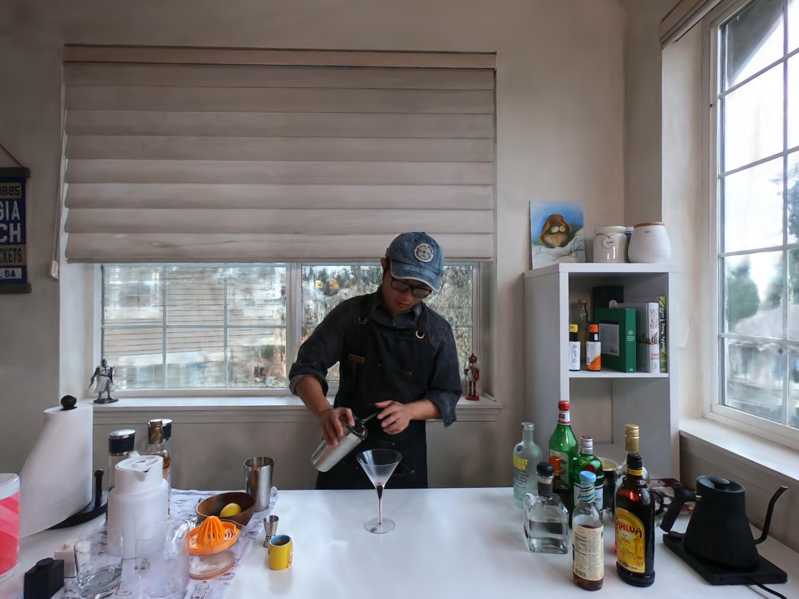
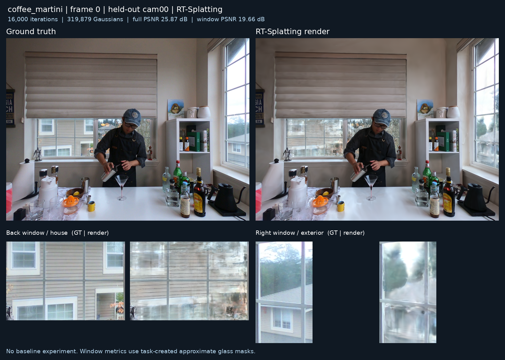
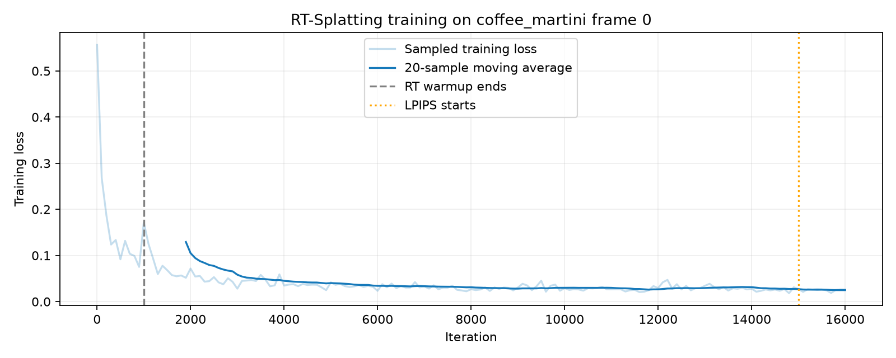

0번 프레임 · 학습 카메라 17개 · 테스트 전용 cam00 · 16,000 iterations
왼쪽 원본 / 오른쪽 렌더링. 슬라이더를 움직여 경계를 조절하세요.

| 영역 | PSNR (dB) | SSIM | MAE |
|---|---|---|---|
| full | 25.874 | 0.8846 | 0.02803 |
| window | 19.660 | 0.6520 | 0.06576 |
| opaque | 27.778 | 0.9175 | 0.02382 |
창문 마스크는 이번 실행용으로 만든 근사 주석입니다. GT에는 실제 반사가 포함되며, 별도 모델과의 비교 실험은 하지 않았습니다.

